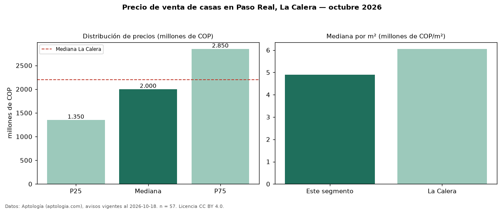

Precio de venta de casas en Paso Real, La Calera — octubre 2026
En Paso Real, La Calera, la mediana de precio de venta de casas es COP 2,00 mil millones, según 57 avisos vigentes. Eso es 9 % por debajo de la mediana de La Calera para casas (COP 2,20 mil millones). Por metro cuadrado, la mediana es COP 4,89 millones/m² (n = 52 avisos con área), 19 % por debajo de La Calera (COP 6,05 millones/m²). El área mediana anunciada es 420 m². El segmento con más oferta es el de 3 o más habitaciones (55 avisos, mediana COP 2,00 mil millones). La administración mediana declarada es COP 1,20 millones al mes (n = 35). La mitad central de los avisos va de COP 1,35 mil millones a COP 2,85 mil millones (razón 2,1), una dispersión alta. Por precio mediano es el puesto 7 de 10 barrios de La Calera con al menos 30 avisos de casas en venta (COP): en la franja media. Datos: Aptología (aptologia.com), CC BY 4.0 — https://www.aptologia.com/casas-en-venta/la-calera/paso-real. Archivos: PDF, CSV con las cifras y gráfica PNG.

| Avisos únicos | 57 |
|---|---|
| Percentil 25 | COP 1.350.000.000 |
| Mediana | COP 2.000.000.000 |
| Percentil 75 | COP 2.850.000.000 |
| Mediana por m² | COP 4.893.617 |
Fuente: avisos vigentes de portales inmobiliarios recopilados por Aptología, deduplicados (mínimo 30 avisos únicos por celda). Precios pedidos, no cerrados. Fecha: 2026-10-18.